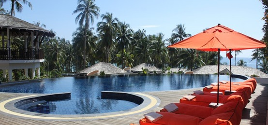

Vanglo House By LWPAC in Canada
Sunrise Expanse Hotel in USA
Stargaze Resort & Spa in USA
Royal Blossom Hotel & Spa in USA
Sunset Shack Hotel in Spain
Glorious Expanse Hotel in France
our most popular clients


Top rated

hot news

Prophecy Hotel & Spa in Emirate
Amazing Gabion Ideas for Outdoors A Gabion is a cage box or cylinder filled with rocks, concrete, or sometimes sand and soil and It is a great way to decorate your outdoor. Amazing Gabion Ideas for Outdoors A Gabion is a cage box or cylinder filled with rocks, concrete, or sometimes sand and soil and It is a great way to decorate your outdoor
Nebula Hotel in Spain
Western Pyramid Resort in Egypt
Amazing Gabion Ideas for Outdoors A Gabion is a cage box or cylinder filled with rocks, concrete, or sometimes sand and soil and It is a great way to decorate your outdoor. Amazing Gabion Ideas for Outdoors A Gabion is a cage box or cylinder filled with rocks, concrete, or sometimes sand and soil and It is a great way to decorate your outdoor
